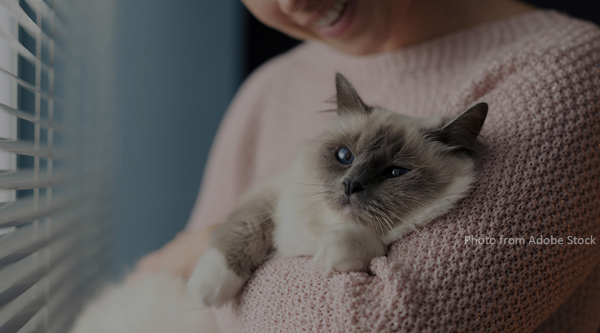
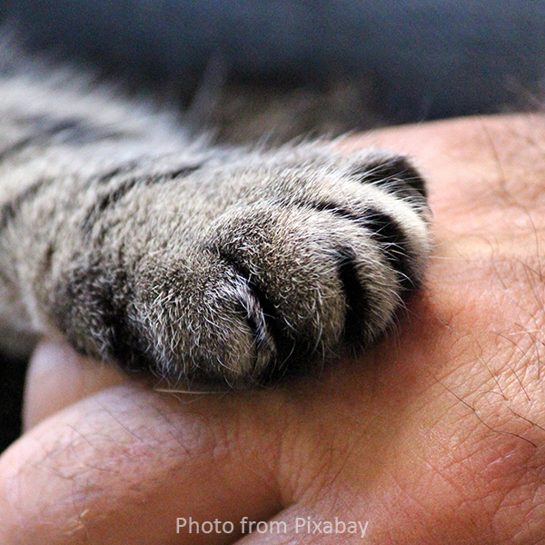

Photo Credit: Adobe Stock
Discover how therapy cats bring comfort, connection, and calm to those who need it most.
Learn MoreC.A.T.S. (Cats As Therapy & Support) is dedicated to promoting the healing power of feline companionship through education, volunteering, and community partnerships.
Join Our Community
Photo Credit: Pixabay
For years, therapy dogs have ruled the world of animal-assisted services (AAS), offering stress relief to college students, hospital patients, and those in need of emotional support. But new research suggests that some cats might also have what it takes to join the ranks of therapy animals -- bringing their purrs, gentle headbutts, and calm demeanor to the field.
Read More